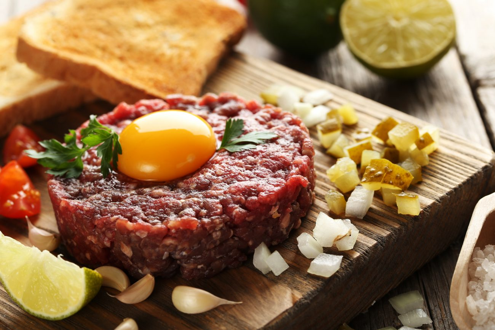

Steak Tartare

Description
A classic steak tartare is a delicatese for gourmans looking for good, fresh raw beef meat combined with freshly chopped shallot, eggs and variety of spices.
Ingredients
- 600 g finely minced lean beef steak
- 4 egg yolks
- 1 shallot
- 1 tbsp Worcester sauce
- 1 tbsp mustard
- 1 tbsp ketchup (optional)
- garlic cloves to garnish bread toasts
- salt and pepper to taste
Steps
- Mix all ingredients in a bowl, season to your taste
- Spread the mix on freshly toasted bread, garnished with garlic